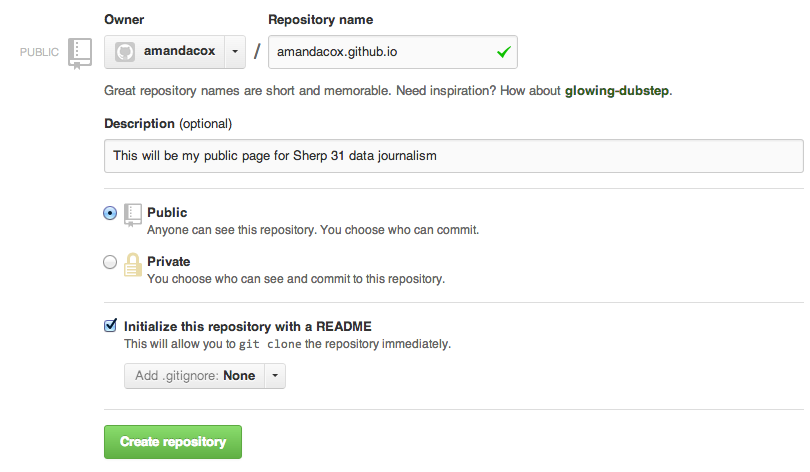
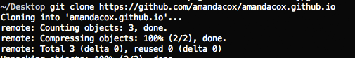

Why we’re here, the big deal about data journalism and making the sausage of the internet
After doing basic first-day-type activities and introductions, we'll go over a short history of data journalism, show some prominent examples of great science journalism, and then get right into coding up a page from scratch.
Lab
Before we do anything super useful or innovative with our soon-to-be-shiny data skills, we need to be able to have a place to write our files so they are public on the internet. This exercise will make sure everyone is properly set up to publish files on Github pages.
Steps to publishing your file on Github pages.
- You'll need to have git installed on your machine. Here's a helper, though we'll spend some time in class doing this as well.
- The first step is to create an account with GitHub. Create a username and password. Once you log in, click on "Create a repository."
- You want to create a user page with Github pages, which will let you publish files to the web for free. Here's some documentation if you stray from the instructions below.
- The name of your repository must be
username/username.github.io. Here's what Amanda's looked like:  - Make sure you check "Initialize this repository with a README" as well. Then click the button that says "Create repository."
- You've just intialized a git repository! Nice. Now we should start adding to it.
- Somewhere on your computer, make a folder called
data-journalismand navigate to it in the Terminal. (Ask your neighbor if you have trouble.) - Copy the clone address, shown below, to your clipboard.

- In the terminal, type
git clonefollowed by the url you copied. So, in Amanda's case, she would tyoegit clone https://github.com/amandacox/amandacox.github.io.gitand then hit enter. If it worked, you should get some messages saying things like this:  - Navigate to the folder you just cloned using the terminal.
- Using either the terminal or your Finder window, move the
index.htmlfile you created above (the table with homework dates on it) to your project folder. - Now you're ready to check in some code. (Sweet!) From the terminal, type the following:
git add .
git commit -m "initial commit for class"
git push
- It should take about 10 minutes for that to show up. But when it does, you will find it at [yourusername].github.io. If you think you did it right, show your instructors, then help a friend.